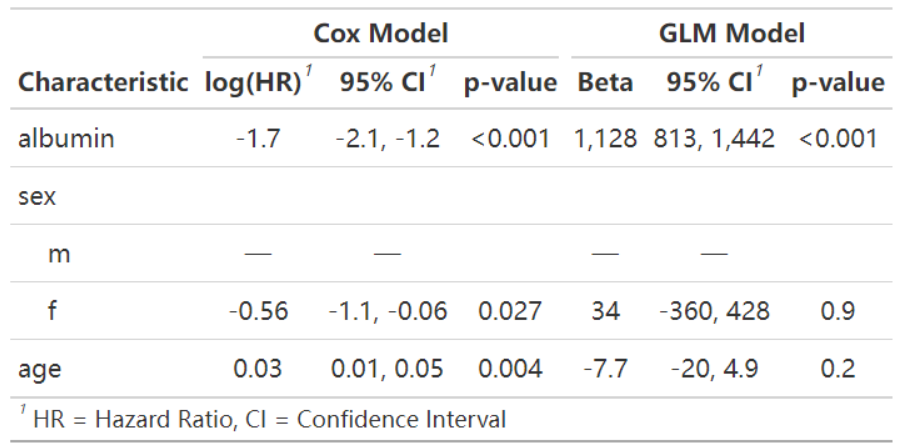
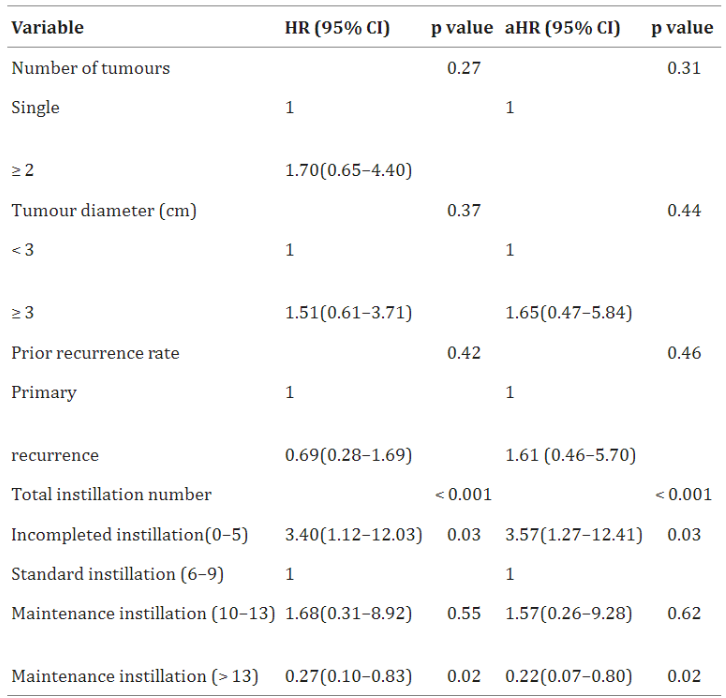
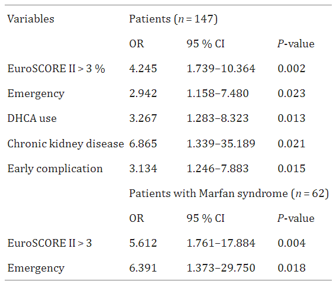

# 安装包
if (!requireNamespace("survival", quietly = TRUE)) {
install.packages("survival")
}
if (!requireNamespace("gtsummary", quietly = TRUE)) {
install.packages("gtsummary")
}
if (!requireNamespace("dplyr", quietly = TRUE)) {
install.packages("dplyr")
}
if (!requireNamespace("datawizard", quietly = TRUE)) {
install.packages("datawizard")
}
if (!requireNamespace("broom.helpers", quietly = TRUE)) {
remotes::install_github("larmarange/broom.helpers")
}
# 加载包
library(survival)
library(gtsummary)
library(dplyr)
library(datawizard)
library(broom.helpers)回归分析表格
回归分析表格是用于展示回归模型结果的表格，它提供了模型中变量的统计信息，帮助解释变量之间的关系。
示例

如图是基于survival包的内置pbc数据集绘制的回归分析表格。图中分别使用了Cox风险比例模型和广义线性回归模型探索血清蛋白、性别、年龄对生存状况的影响。
环境配置
系统要求： 跨平台（Linux/MacOS/Windows）
编程语言：R
依赖包：
survival,gtsummary,dplyr,datawizard
数据准备
使用R包survival内置的pbc数据集，包含了418名原发性胆汁性肝硬化（PBC）患者的信息，这些患者在研究开始时或之前已经接受了熊去氧胆酸（UDCA）治疗。pbc数据集记录了pbc患者的生存时间、生存状态、治疗方式、年龄、性别、白蛋白水平、肝肿大情况等临床信息。
df <- pbc %>%
filter(status != 1) %>%
mutate(status = ifelse(status == 2, 1, 0)) %>%
select(2:13) %>%
na.omit() %>%
# 将`albumin`分为3组
mutate(albumin3cat = categorize(albumin, split = "quantile", n_groups = 3))
head(df[,1:6]) time status trt age sex ascites
1 400 1 1 58.76523 f 1
2 4500 0 1 56.44627 f 0
3 1012 1 1 70.07255 m 0
4 1925 1 1 54.74059 f 0
5 2503 1 2 66.25873 f 0
6 1832 0 2 55.53457 f 0可视化
1. 基础回归分析表格
# 基本绘图
t1 <- coxph(Surv(time, status) ~ albumin + sex + age,
data = df
) %>%
tbl_regression()
t1| Characteristic | log(HR) | 95% CI | p-value |
|---|---|---|---|
| albumin | -1.7 | -2.1, -1.2 | <0.001 |
| sex | |||
| m | — | — | |
| f | -0.56 | -1.1, -0.06 | 0.027 |
| age | 0.03 | 0.01, 0.05 | 0.004 |
| Abbreviations: CI = Confidence Interval, HR = Hazard Ratio | |||
该表是基础回归分析表格，通过coxph()调用Cox比例风险模型和使用tbl_regression()将回归分析的结果表格化。
2. tbl_regression()参数设置
# tbl_regression()参数设置
t1 <- coxph(Surv(time, status) ~ albumin + sex + age,
data = df
) %>%
# 参数设置
tbl_regression(
conf.level = 0.90,
exponentiate = TRUE,
include = c("sex", "albumin"),
show_single_row = sex,
label = list(sex ~ "sex as categorical")
)
t1| Characteristic | HR | 90% CI | p-value |
|---|---|---|---|
| sex as categorical | 0.57 | 0.37, 0.87 | 0.027 |
| albumin | 0.19 | 0.13, 0.28 | <0.001 |
| Abbreviations: CI = Confidence Interval, HR = Hazard Ratio | |||
表中tbl_regression()有很多参数设置，可以更改表格的置信区间，行名等信息。
提示
重要参数：tbl_regression
conf.level: 确定回归分析的置信水平，默认的0.95表示95%置信区间。exponentiate: 是否对HR值取指数，默认列是log(HR)值。include: 统计表格中包含哪些自变量因素（行）show_single_row: 适用于二分类变量，不显示对照组。label: 更改自变量因素的名称（行名）。
3. 添加global-p
# 添加global-p
df$albumin3cat=as.factor(df$albumin3cat)
t1 <- coxph(Surv(time, status) ~ albumin3cat + sex + age,
data = df) %>%
tbl_regression() %>%
add_global_p()
t1| Characteristic | log(HR) | 95% CI | p-value |
|---|---|---|---|
| albumin3cat | <0.001 | ||
| 1 | — | — | |
| 2 | -0.72 | -1.2, -0.27 | |
| 3 | -1.3 | -1.7, -0.77 | |
| sex | 0.073 | ||
| m | — | — | |
| f | -0.48 | -0.98, 0.02 | |
| age | 0.03 | 0.01, 0.05 | <0.001 |
| Abbreviations: CI = Confidence Interval, HR = Hazard Ratio | |||
该表通过add_global_p()添加全局P值。
4. 添加q-value
# 添加q-value
t1 <- coxph(Surv(time, status) ~ albumin + sex + age,
data = df
) %>%
tbl_regression() %>%
# 添加q-value列
add_q()
t1| Characteristic | log(HR) | 95% CI | p-value | q-value1 |
|---|---|---|---|---|
| albumin | -1.7 | -2.1, -1.2 | <0.001 | <0.001 |
| sex | ||||
| m | — | — | ||
| f | -0.56 | -1.1, -0.06 | 0.027 | 0.027 |
| age | 0.03 | 0.01, 0.05 | 0.004 | 0.006 |
| 1 False discovery rate correction for multiple testing | ||||
| Abbreviations: CI = Confidence Interval, HR = Hazard Ratio | ||||
该表通过add_q()添加q-value列。
5. 合并列
# 合并列
t1 <- coxph(Surv(time, status) ~ albumin3cat + sex + age,
data = df) %>%
tbl_regression() %>%
# 修改表头名称
modify_header(p.value = "**P**",estimate="**log(HR) (CI)**") %>%
# 将评分列和CI列合并并应用于评分不为NA的行
modify_column_merge(
pattern = "{estimate} ({conf.low}, {conf.high})",
rows = !is.na(estimate)
)
t1| Characteristic | log(HR) (CI) | P |
|---|---|---|
| albumin3cat | ||
| 1 | — | |
| 2 | -0.72 (-1.2, -0.27) | 0.002 |
| 3 | -1.3 (-1.7, -0.77) | <0.001 |
| sex | ||
| m | — | |
| f | -0.48 (-0.98, 0.02) | 0.062 |
| age | 0.03 (0.01, 0.05) | <0.001 |
| Abbreviations: CI = Confidence Interval, HR = Hazard Ratio | ||
该表将评分列和CI列合并，是一种常见的形式，合并后恰当修改了表头。
提示
重要函数 modify_header / modify_column_merge:
modify_header:modify_header()可用于修改标题名称。其中label表示变量列，p.value表示P值列，ci表示置信区间列，estimate表示评分列，conf.low表示置信区间下区间，conf.high表示置信区间上区间。
modify_column_merge:参数pattern是要合并列的模式，参数rows是要应用到的行。
6. 模型整合
模型横向整合
# 模型横向整合
t1 <- coxph(Surv(time, status) ~ albumin + sex + age,
data = df
) %>%
tbl_regression()
t2 <- glm(time ~ albumin + sex + age,
data = df
) %>%
tbl_regression()
# t1, t2模型整合
t3 <- tbl_merge(
tbls = list(t1, t2),
tab_spanner = c("**Cox Model**", "**GLM Model**")
)
t3| Characteristic |
Cox Model
|
GLM Model
|
||||
|---|---|---|---|---|---|---|
| log(HR) | 95% CI | p-value | Beta | 95% CI | p-value | |
| albumin | -1.7 | -2.1, -1.2 | <0.001 | 1,128 | 813, 1,442 | <0.001 |
| sex | ||||||
| m | — | — | — | — | ||
| f | -0.56 | -1.1, -0.06 | 0.027 | 34 | -360, 428 | 0.9 |
| age | 0.03 | 0.01, 0.05 | 0.004 | -7.7 | -20, 4.9 | 0.2 |
| Abbreviations: CI = Confidence Interval, HR = Hazard Ratio | ||||||
该表使用tbl_merge横向整合了pdb患者的Cox比例风险模型和广义线性回归模型的结果。
模型纵向整合
# 模型纵向整合
t1 <- coxph(Surv(time, status) ~ albumin + sex + age,
data = df[df$hepato==0,]
) %>%
tbl_regression()
t2 <- coxph(Surv(time, status) ~ albumin + sex + age,
data = df[df$hepato==1,]
) %>%
tbl_regression()
tbl_stack(list(t1, t2), group_header = c("Patients without hepato", "Patients with hepato"))| Characteristic | log(HR) | 95% CI | p-value |
|---|---|---|---|
| Patients without hepato | |||
| albumin | -1.4 | -2.3, -0.47 | 0.003 |
| sex | |||
| m | — | — | |
| f | -1.1 | -1.9, -0.36 | 0.004 |
| age | 0.06 | 0.03, 0.09 | <0.001 |
| Patients with hepato | |||
| albumin | -1.4 | -2.0, -0.87 | <0.001 |
| sex | |||
| m | — | — | |
| f | -0.29 | -0.97, 0.38 | 0.4 |
| age | 0.01 | -0.01, 0.04 | 0.3 |
| Abbreviations: CI = Confidence Interval, HR = Hazard Ratio | |||
该表使用tbl_stack纵向整合了有无hepato的两组pdb患者的Cox比例风险模型的结果。
应用场景

单变量和多变量Cox回归分析表格用于中危NMIBC患者3年肿瘤复发情况。[1]

该回归分析表格显示了多变量Cox回归分析中晚期总死亡率的独立预测因素。[2]
参考文献
[1] CHEN J X, HUANG W T, ZHANG Q Y, et al. The optimal intravesical maintenance chemotherapy scheme for the intermediate-risk group non-muscle-invasive bladder cancer[J]. BMC Cancer, 2023,23(1): 1018.
[2] BENKE K, ÁGG B, SZABÓ L, et al. Bentall procedure: quarter century of clinical experiences of a single surgeon[J]. J Cardiothorac Surg, 2016,11: 19.